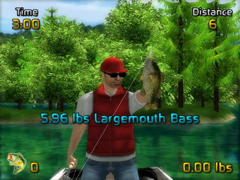

15 |
Lutter avec le poisson |
 |
|

Si vous réussissez à attirer un poisson à votre leurre, le poisson mordra. À ce stade, vous aurez juste quelques secondes pour fixer l’hameçon dans la bouche du poisson avant qu’il ne recrache le leurre.
À ce stade, la lutte contre le poisson commence vraiment. Il y a deux éléments clés dans la lutte contre les poissons. La première est la gestion du Tension Meter (Mètre de tension). Pour attraper un poisson vous devez l’amener avec le moulinet tout près de l'embarcation tout en évitant les fortes tensions qui peuvent rompre la ligne. La tension augmente à cause du dévidage et du poisson qui veut s’éloigner du pêcheur. Vous ne pouvez pas contrôler les actions du poisson, donc quand la tension devient élevée, vous pouvez arrêter ou ralentir le jeu du moulinet pour réduire la tension avant que la ligne ne se rompe. Le deuxième élément clé dans la lutte contre les poissons est de réagir aux mouvements de la canne à pêche. Quand le poisson lutte pour s'enfuir, vous devrez agir selon les incitations affichées à l'écran. Vous devez répondre à ces actions en quelques secondes, sinon le poisson va recracher l’hameçon.
En plus d'un message à l'écran indiquant l'action de la canne à pêche nécessaire, une icône affichera les contrôles exacts à utiliser si Rod Action Hints (Conseils sur l'action de la canne à pêche) est activée dans le Options Menu (Menu options). Quand vous avez attiré le poisson tout près du bateau, on vous demandera de le « Pull it In! » (tirez-le dans !) Si vous ne prenez le poisson en quelques secondes, vous ne perdrez pas le poisson, mais vous devrez effectuer une autre action de la canne à pêche avant d'obtenir une autre occasion de tirer le poisson dans le bateau.
Après un succès, les espèces et les poids seront affichés, et des messages peuvent indiquer des réussites telles que les meilleures prises par poids ou un leurre nouvellement déverrouillé. |
 ,
,  ,
, ou pour effectuer le mouvement de la canne à pêche désiré.
,
, ou pour effectuer le mouvement de la canne à pêche désiré. |
 |
 |